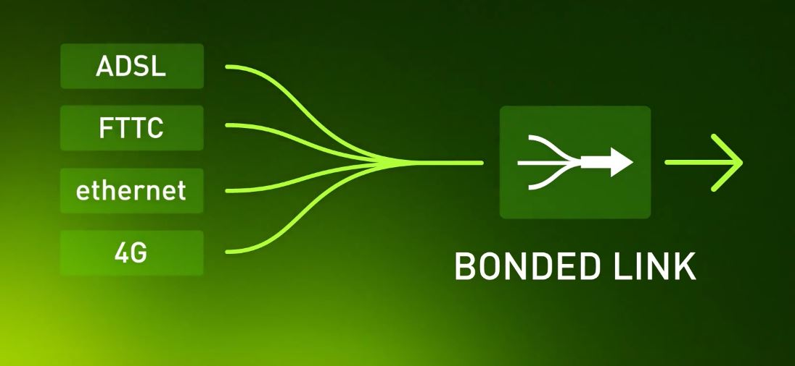
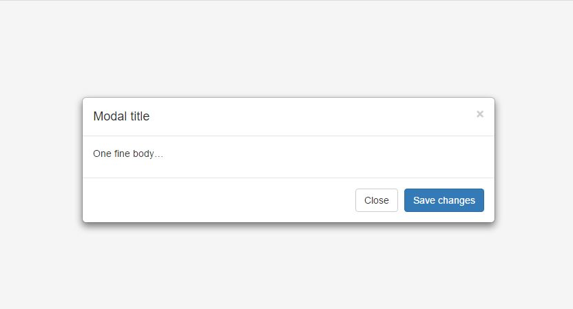

An Introduction to RxJS
Ben Farr
About Me
- Name: Ben Farr (jaminfarr)
- Job: Internal Systems Developer
- Beard: Math.random()
Evolving Networks
A Very brief history of RxJS
Rx.NET, RxJS, RxJava, RxSwift, RxScala, etc...
 2
2
What is RxJS?
Reactive Extentions for JavaScript
- Observables + LINQ + Schedulers
- Reactive Programming
- An API for asynchronous programming with observable streams
It's all about EVENTS and EVENT STREAMS
You're already using event streams
Dom Events
- Clicks
- Form input
- Mouse moves
- Scrolls
- Key presses

Timers
- setTimeout
- setInterval
Others
- Ajax
- Websockets
Quick Example
document.addEventListener('click', function(e) {
console.log('clicked');
});
var clicks$ = Rx.Observable.fromEvent(document, 'click');
clicks$.subscribe(function(e) {
console.log('clicked with Rx!');
});
Problems with current events systems
- Many different interfaces
- Hard to cancel/clean up
- Hard to combine
- Working with single events not streams
- State management
setInterval(function() {
// Do Actions every 2 seconds
}, 2000);
document.addEventListener('click', function(event) {
// Do Actions for every mouse click
});
var request = new XMLHttpRequest();
request.open('GET', '/api/data', true);
request.onload = function() {
if (this.status >= 200 && this.status < 400) {
var data = JSON.parse(this.response);
// Do Actions when the server responds
} else {
// We reached our target server, but it returned an error
}
};
request.onerror = function() {
// There was a connection error of some sort
};
request.send();
jQuery.ajax('/api/data', function(response) {
// Do Actions when the server responds
});
var intervalID = setInterval(function() { /* ... */ }, 2000);
// Later
clearInterval(intervalID);
var clickHandler = function() { /* ... */ };
document.addEventListener('click', clickHandler);
// Later
document.removeEventListener('click', clickHandler);
var request = jQuery.ajax('/api/data/', function(res) { /*...*/ });
// Later
request.abort();
Creating Observables
var Observable = Rx.Observable;
// Event streams of timed intervals
var source$ = Observable.interval(2000);
// --tick--tick--tick--tick--tick--tick-->
// or
// Event stream of mouse clicks
var source$ = Observable.fromEvent(document, 'click');
// --click--click------click------click-click-->
// or
// Event stream of an Ajax response
var source$ = Observable.ajax('/api/data');
// -----jsonObject|
// -----X
The Observable interface
source$.subscribe(
// next
function(item) { ... },
// error
function(err) { ... },
// completed
function() { ... }
);
Subscribe with an object
source$.subscribe({
next: function(item) { ... },
error: function(err) { ... },
completed: function() { ... }
});
ES2015 (ES6) Method definition shorthand
source$.subscribe({
next(item) { ... },
error(err) { ... },
completed() { ... }
});
Stopping a stream
var subscription = source$.subscribe(
// next
function(item) { ... },
// error
function(err) { ... },
// completed
function() { ... }
);
// Later
subscription.unsubscribe();
Operators
Don't panic
RxJS is lodash for Observables
Map and Filter
---1-----4-----2----7--8-->
~~~ map(x + 2) ~~~
---3-----6-----4----9--10->
---1-----4-----2----7--8-->
~~~ filter(isEven) ~~~
---------4-----2-------8-->
Treat events like an Array
var sourceArray = [1, 6, 3, 3, 8, 2];
var resultArray = sourceArray
.filter(function(x) { return x % 2 === 0; })
// [6, 8, 2]
.map(function(x) { return x * 10; })
// [60, 80, 20]
var source$ = Rx.Observable.from([1, 6, 3, 3, 8, 2]);
var result$ = source$
.filter(function(x) { return x % 2 === 0; })
// [6, 8, 2]
.map(function(x) { return x * 10; })
// [60, 80, 20]
Take and Skip
---1---2---3---4---5---6--->
~~~ take(3) ~~~
---1---2---3|
---1---2---3---4---5---6--->
~~~ skip(2) ~~~
-----------3---4---5---6--->
Combining Observables

---a-----a-----a----a--a-->
-------b----b-----b------->
~~~ merge ~~~
---a---b-a--b--a--b-a--a-->
var close$ = Rx.Observable.merge(
Rx.Observable.fromEvent(closeBtn, 'click'),
Rx.Observable.fromEvent(xBtn, 'click'),
Rx.Observable.fromEvent(background, 'click')
);
var esc$ = Rx.Observable.fromEvent(document, 'keyup')
.filter(function(e) { return e.key === 'Escape'; });
var closeWithEsc$ = close$.merge(esc$);
var sub = closeWithEsc$
.take(1)
.subscribe(function(){ /*close pop-up*/ });
merge with completes
---a-----a---|
-------b----b-----b-----|
~~~ merge ~~~
---a---b-a--b-----b-----|
merge with errors
---a-----a-----a----a--a-->
-------b---X
~~~ merge ~~~
---a---b-a-X
ajax
var getUpdates$ = Rx.Obserable.ajax('api/updates');
getUpdates$
.subscribe(
function(data) { },
function(err) { }
);
getUpdates$
.subscribe(
function(data) { },
function(err) { }
);
getUpdates$.retry(3);
mergeMap
---a----a------a------a---->
~~~ mergeMap(---b|) ~~~
---b|
---b|
---b|
---b|
------b----b------b------b->
mergeMap
---a----a-------a------a---->
~~~ mergeMap(--b---b|) ~~~
-b------b|
-b---------b|
--b---b|
--b---b|
~~~
----b----b-b------bb--b-b---b->
Working with Node.js
// Rx.Observable.bindCallback fn(..., callback(data))
// Rx.Observable.bindNodeCallback fn(..., callback(err, data))
var fs = require('fs');
var Rx = require('rxjs');
var rxReadFile = Rx.Observable.bindNodeCallback(fs.readFile);
var files = ['file1.txt', 'file2.txt', 'file3.txt'];
Rx.Observable.from(files)
.mergeMap(function(file) {
return rxReadFile(file)
.catch(function() { return Rx.Observable.empty(); });
})
.subscribe(function(fileContents) {
// work with file data
});
Data collector
deviceStats$
// {id: 434, upRate: 345, downRate: 643, online: true}
// {id: 378, upRate: 345, downRate: 643, online: true}
// {id: 78, upRate: 0, downRate: 0, online: false} ...
.bufferTime(100)
.filter(function(buffer) { return buffer.length > 0; })
.subscribe(writeToDatabaseBatch);
/*
----a-a-a-a-a-aa-a-a-a-a-a-a-a-a-a-a-a-a-a-a-a-a-a-a->
~~~ bufferTime ~~~
--------[a,a,a]--[a,a,a...]--[a,a,a...]--[a,a,a...]->
*/
var urls$ = deviceUrlsFromDb(dbConfig);
// https://device1, https://device2, https://device3
var deviceStats$ = timer$
.mergeMapTo(urls$) // .combineLatest(urls$)
.mergeMap(
function(url) { return rxRequest(url); /* catch */ },
function(url, content) {
return { url: url, content: content };
}
)
.map(extractThroughputData);
Some Gottchas
Multiple subscriptions
var random$ = Rx.interval(1000)
.map(function(){ return Math.random() * 100; })
.share();
var randomUnder50$ = random$.takeUntil(
random$.filter(function(number) {return number > 50; })
);
Some Gottchas
Synchronous Streams
var data1$ = Rx.Observable.from([1, 3, 5, 7, 9]);
var data2$ = Rx.Observable.from([2, 4, 6, 8, 10]);
var data$ = data1$.merge(data2$);
// 1 3 5 7 9 2 4 6 8 10
Thank you all very much!
Ben Farr benfarr.co.uk
- JaminFarr on github, twitter, everything
- jamin.farr@gmail.com